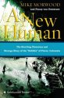
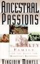
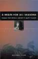
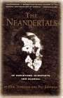
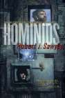
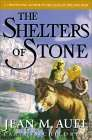
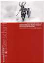
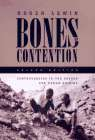
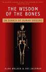
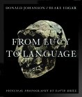

Fósseis de Hominídeos: Livros em Destaque

|
Guia Intimo do Smithsonian sobre as Origens Humanas Uma excelente introdução pelo escritor científico Carl Zimmer |
|
 |
Um Novo Humano A história da descoberta de Homo floresiensis, por Mike Morwood, líder da equipe de descoberta |
|
 |
Paixões Ancestrais A biografia definitiva da família Leakey, por Virginia Morell |

|
As Sete Filhas de Eva Um excelente livro popular sobre a ciência por trás do DNA mitocondrial, pelo cientista Bryan Sykes. |

|
O Homem que Encontrou o Elo Perdido A excelente biografia de Eugene Dubois, o descobridor do Homem de Java, por Pat Shipman. |
|
 |
Um Cérebro para Todas as Estações Um livro estimulante de William Calvin que investiga a ligação entre a evolução humana e as mudanças climáticas. |
|
 |
Os Neandertais Um excelente livro de Erik Trinkaus e Pat Shipman sobre a história dos Neandertais desde que foram descobertos há quase 150 anos. |
|
 |
Hominídeos O primeiro livro da trilogia A Parallax Neandertal, por Robert Sawyer |
|
 |
Os Abrigos de Pedra O aguardado quinto livro da série As Filhas da Terra de Jean Auel foi publicado em abril de 2002. |
|
 |
Neandertais e Humanos Modernos: Discutindo a Transição
Um conjunto de artigos de pesquisa recentes do Museu Neandertal. |
|
 |
Os Ossos de Controvérsia
Histórias detalhadas de muitos dos debates científicos mais importantes na paleoantropologia. |
|
 |
Sabedoria dos Ossos
Uma história de Homo erectus, especialmente a descoberta e análise do esqueleto do Menino de Turkana, pelo paleoantropólogo Alan Walker. |
|
 |
De Lucy à Linguagem Um excelente livro que oferece uma boa visão geral da paleoantropologia e está repleto de fotos em tamanho real. |
Esta página faz parte do FAQ sobre Fósseis de Hominídeos no Arquivo TalkOrigins.
Página Inicial |
Espécies |
Fósseis |
Criacionismo |
Leitura |
Referências
Ilustrações |
O que há de novo |
Feedback |
Pesquisa |
Links |
Ficção
http://www.talkorigins.org/faqs/homs/featuredbooks.html, 30/06/2004
Direitos autorais © Jim Foley
|| Envie-me um e-mail